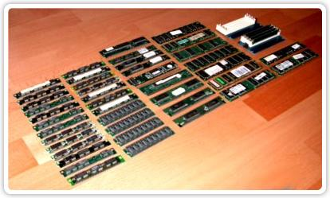
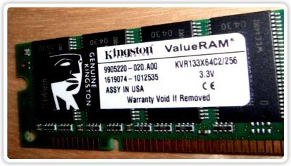
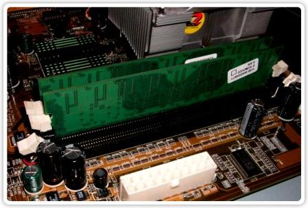
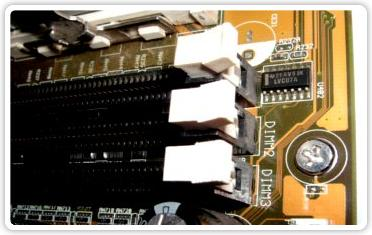
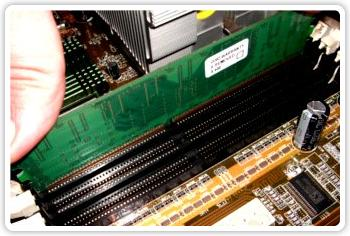
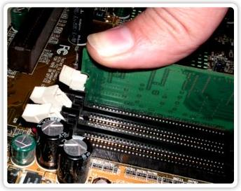
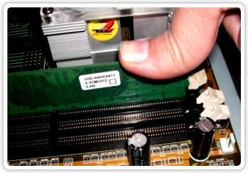
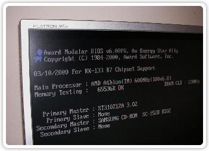

|
|
|---|
¿COMO INSTALAR MAS MEMORIA RAM A TU PC?  Uno de los componentes mas importantes de un PC es la memoria Ram, con ella podemos conseguir un incremento de la velocidad del sistema así como de el lanzamiento de las aplicaciones y de su funcionamiento. Antes de actualizarte todo el ordenador puede ser interesante que hagas un incremento de memoria y seguro que notas la diferencia. Para agregar un modulo de memoria a tu PC solo tienes que seguir los siguiente pasos que son de lo mas sencillos aunque tenemos que tener alguna idea a la hora de ir a la tienda de componentes informáticos. Para saber que tipo de memoria debemos comprar solo tenemos que extraer el modulo de memoria que ya tiene instalado el PC para ver las especificaciones de la memoria y comprar una de el mismo tipo. Tenemos que fijarnos en la etiqueta que tienen la mayoría de módulos de memoria como por ejemplo esta …
 Una de mis marcas preferidas a la hora de comprar memoria es la Kingston ya que son las que disponen de mas garantía y no se suelen romper. Tengo y he usado varios tipos de memorias con marcas diferentes y las Kingston nunca me han dado problemas ( Recomendado ) En la foto se puede apreciar que ese modulo de memoria dispone de 256 Mb y que va a una velocidad de 133 Mhz ademas de su voltaje y demás. Lo que realmente nos interesa a la hora de comprar una memoria son los Mega Hercios ( Mhz ) a los que funciona esa memoria ya que si le vamos ha hacer un incremento de memoria no podemos poner memorias de velocidades diferentes. También hay que decir que podemos agregarle módulos de memoria que funcionen a mas Mhz que la que tenemos actualmente pero su velocidad se reducirá a la soportada por tu placa base y puede traerte complicaciones y hacer que el sistema se vuelva inestable. Si ves que no te aclaras con la etiqueta, saca el modulo de memoria y llevatelo a la tienda para que te vendan otro. ¿ Instalamos un modulo ? La instalación es tan sencilla como la de retirar la tapa del PC y localizar donde están las ranuras para conectar el modulo ….
 Como podéis ver en la imagen anterior tengo dos módulos de memoria ya instalados y me queda otra ranura para poder conectar otro.
 Si os fijáis en el lateral derecho de la imagen podemos ver que pone alado de cada ranura ( Dimm3, Dimm2, ) Dimm1 está tapado por ese pequeño chip. Explico esto porque el orden de las memorias instaladas deben ir desde Dimm1 hasta Dimm3 empezando siempre por ocupar la 1ª posición.
 La forma de insertar el modulo no tiene perdida ya que sus conexiones siempre están hechas para que solo se pueda encajar de la forma correcta. Insertamos el modulo y presionamos por los dos lados hasta que las palanquetas queden bien sujetas al modulo ….
  Lo cierto es que hay que hacer bastante presión hasta escuchar el click que nos indica que el modulo esta correctamente acoplado pero hay que tener cuidado con no apretar demasiado ya que se puede romper la placa base o la ranura. Una vez llegado a este punto ya podemos cerrar de nuevo la caja de nuestro PC y arrancarlo. Si todo a ido bien veremos en el arranque la memoria disponible ya incrementada donde poner ( Memory Testing ) aquí tenemos un ejemplo ….
 Y eso es todo amigos, si no sabíais como agregar mas memoria a vuestro PC ya sabéis que podéis hacerlo vosotros mismos y no pagar una hora de servicio técnico ademas de el modulo de memoria para que os lo instalen. Andaluzsoy |